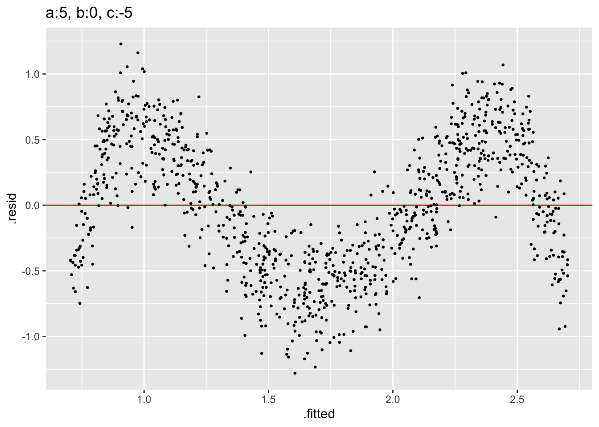

pattern_explore
library(visage)
library(tidyverse)## ── Attaching packages ─────────────────────────────────────── tidyverse 1.3.1 ──## ✓ ggplot2 3.3.5 ✓ purrr 0.3.4
## ✓ tibble 3.1.6 ✓ dplyr 1.0.7
## ✓ tidyr 1.2.0 ✓ stringr 1.4.0
## ✓ readr 1.4.0 ✓ forcats 0.5.1## Warning: package 'tidyr' was built under R version 4.1.2## ── Conflicts ────────────────────────────────────────── tidyverse_conflicts() ──
## x dplyr::filter() masks stats::filter()
## x dplyr::lag() masks stats::lag()mod <- simple_cubic_model(x = rand_uniform(-1, 1), sigma = 0.25)
ori_dat <- mod$gen(1000, computed = list(e = rep(0, 1000)))
i <- 0
plot_list <- list()
for (a in seq(-1.5, 1.5, 0.25)) {
for (b in seq(-1.5, 1.5, 0.25)) {
i <- i + 1
mod$set_prm("a", a) %>%
{.$set_prm("b", b)} %>%
{.$gen(1000, computed = select(ori_dat, x, e))} %>%
{mod$plot(., remove_axis = TRUE, remove_grid_line = TRUE)} +
ggtitle(glue::glue("a:{a}, b:{b}, a/|b|:{a/abs(b)}")) -> plot_list[[i]]
}
}
patchwork::wrap_plots(plot_list, ncol = 13)
There are 8 basic shapes, (1.5, 1.5), (1.5, -1.5), (1.5, 0), (-1.5, 0), (0, 1.5), (0, -1.5), (-1.5, 1.5), (-1.5, -1.5). Others are transitions between these five shapes.
plot_list <- list()
mod$set_prm(c("a", "b"), c(-1.5, -1.5)) %>%
{.$gen(1000, computed = select(ori_dat, -y))} %>%
{mod$plot(.)} +
ggtitle(glue::glue("a:{mod$prm$a}, b:{mod$prm$b}")) -> plot_list[[1]]
mod$set_prm(c("a", "b"), c(-1.5, 0)) %>%
{.$gen(1000, computed = select(ori_dat, -y))} %>%
{mod$plot(.)} +
ggtitle(glue::glue("a:{mod$prm$a}, b:{mod$prm$b}")) -> plot_list[[2]]
mod$set_prm(c("a", "b"), c(-1.5, 1.5)) %>%
{.$gen(1000, computed = select(ori_dat, -y))} %>%
{mod$plot(.)} +
ggtitle(glue::glue("a:{mod$prm$a}, b:{mod$prm$b}")) -> plot_list[[3]]
mod$set_prm(c("a", "b"), c(0, -1.5)) %>%
{.$gen(1000, computed = select(ori_dat, -y))} %>%
{mod$plot(.)} +
ggtitle(glue::glue("a:{mod$prm$a}, b:{mod$prm$b}")) -> plot_list[[4]]
mod$set_prm(c("a", "b"), c(0, 1.5)) %>%
{.$gen(1000, computed = select(ori_dat, -y))} %>%
{mod$plot(.)} +
ggtitle(glue::glue("a:{mod$prm$a}, b:{mod$prm$b}")) -> plot_list[[6]]
mod$set_prm(c("a", "b"), c(1.5, -1.5)) %>%
{.$gen(1000, computed = select(ori_dat, -y))} %>%
{mod$plot(.)} +
ggtitle(glue::glue("a:{mod$prm$a}, b:{mod$prm$b}")) -> plot_list[[7]]
mod$set_prm(c("a", "b"), c(1.5, 0)) %>%
{.$gen(1000, computed = select(ori_dat, -y))} %>%
{mod$plot(.)} +
ggtitle(glue::glue("a:{mod$prm$a}, b:{mod$prm$b}")) -> plot_list[[8]]
mod$set_prm(c("a", "b"), c(1.5, 1.5)) %>%
{.$gen(1000, computed = select(ori_dat, -y))} %>%
{mod$plot(.)} +
ggtitle(glue::glue("a:{mod$prm$a}, b:{mod$prm$b}")) -> plot_list[[9]]
plot_list[[5]] <- patchwork::plot_spacer()
patchwork::wrap_plots(plot_list, ncol = 3)
These five are based on three patterns. Others are products of 180 degrees rotation or flip.
mod <- quartic_model(x = rand_uniform(-1, 1), sigma = 0.25)
ori_dat <- mod$gen(1000)
i <- 0
plot_list <- list()
for (c in seq(-20, 20, 5)) {
i <- i + 1
mod$set_prm(c("a", "b", "c"), c(5, 0, c)) %>%
{.$gen(1000, computed = select(ori_dat, -y))} %>%
{mod$plot(.)} +
ggtitle(glue::glue("a:{mod$prm$a}, b:{mod$prm$b}, c:{mod$prm$c}")) -> plot_list[[i]]
i <- i + 1
mod$set_prm(c("a", "b"), c(-5, 0)) %>%
{.$gen(1000, computed = select(ori_dat, -y))} %>%
{mod$plot(.)} +
ggtitle(glue::glue("a:{mod$prm$a}, b:{mod$prm$b}, c:{mod$prm$c}")) -> plot_list[[i]]
i <- i + 1
mod$set_prm(c("a", "b"), c(-5, -5)) %>%
{.$gen(1000, computed = select(ori_dat, -y))} %>%
{mod$plot(.)} +
ggtitle(glue::glue("a:{mod$prm$a}, b:{mod$prm$b}, c:{mod$prm$c}")) -> plot_list[[i]]
i <- i + 1
mod$set_prm(c("a", "b"), c(5, 5)) %>%
{.$gen(1000, computed = select(ori_dat, -y))} %>%
{mod$plot(.)} +
ggtitle(glue::glue("a:{mod$prm$a}, b:{mod$prm$b}, c:{mod$prm$c}")) -> plot_list[[i]]
i <- i + 1
mod$set_prm(c("a", "b"), c(0, 5)) %>%
{.$gen(1000, computed = select(ori_dat, -y))} %>%
{mod$plot(.)} +
ggtitle(glue::glue("a:{mod$prm$a}, b:{mod$prm$b}, c:{mod$prm$c}")) -> plot_list[[i]]
}
patchwork::wrap_plots(plot_list, ncol = 5)The change of c brings two more shapes. (5,0,-5) and (-5,0,5). Other new shapes are quite similar to the previous. I don’t think they are fundamentally different.
mod$set_prm(c("a", "b", "c"), c(5, 0, -5)) %>%
{.$gen(1000, computed = select(ori_dat, -y))} %>%
{mod$plot(.)} +
ggtitle(glue::glue("a:{mod$prm$a}, b:{mod$prm$b}, c:{mod$prm$c}"))mod$set_prm(c("a", "b", "c"), c(-5, 0, 5)) %>%
{.$gen(1000, computed = select(ori_dat, -y))} %>%
{mod$plot(.)} +
ggtitle(glue::glue("a:{mod$prm$a}, b:{mod$prm$b}, c:{mod$prm$c}"))
Number count:
Consider using the simple cubic linear model.
\[y = 1 + x + ax^2 + bx^3\]
The absolute scale of \(a\) and \(b\) actually doesn’t matter. If there is zero noises, the shape only changes when the ratio of \(a\) to \(|b|\) changes.
b:0 a:1 a:-1 b:1 a:-5 a:-4 a:-3 a:-2 a:-1 a:0 a:1 a:2 a:3 a:4 a:5
\(2 + 11 = 13\) combinations
We do need to keep \(x\) otherwise F-test can not be conducted.
We then only need to adjust the sigma level for different noise levels.